Nyoho-san and Nantai-san,
June 5-6, 2004
(organised by Sveta and Nicolas)
Photos and report by Sveta and Nicolas
|
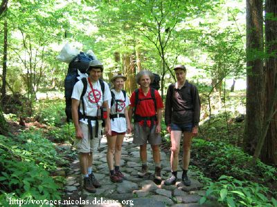 |
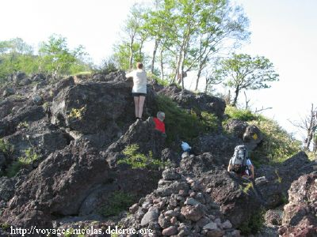 |
|
| the start |
|
|
|
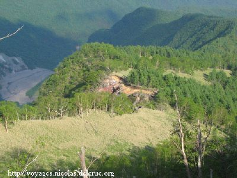 |
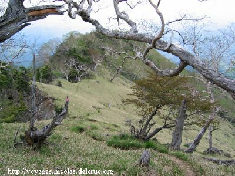 |
|
| |
|
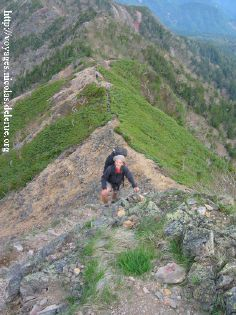 |
|
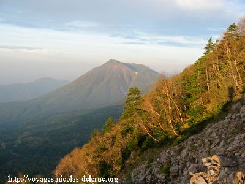 |
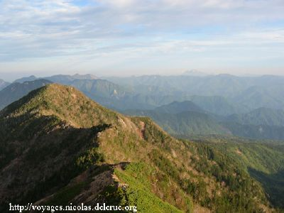 |
| the
sunset |
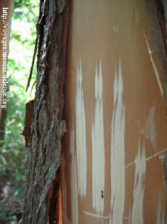 |
|
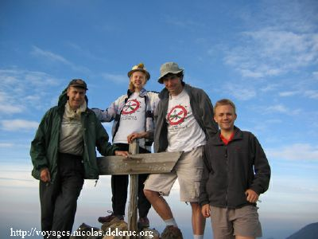 |
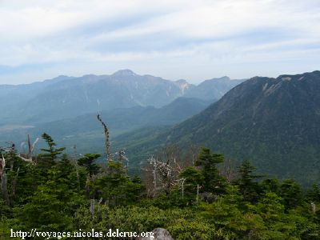 |
| at Mt. Nyoho |
|
claw marks on trees |
|
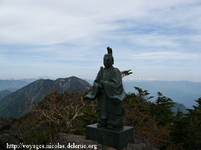 |
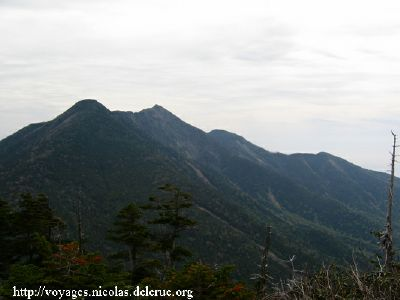 |
|
| at Mt. Omanago |
view of Nyoho-san from Omanago
peak |
|
|
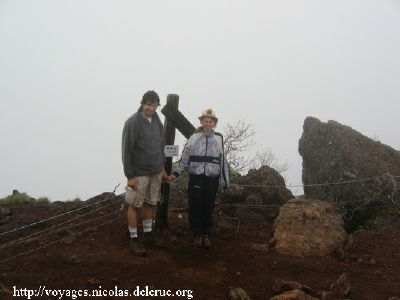 |
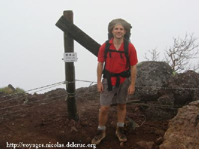 |
|
| at Nantai peak!
- braving the rain and cold wind |
|
Report by Sveta and Nicolas:
We had announced that the Nyoho-san
hike would be challenging and it was but everybody came back happy and safe!
We left Tsukuba on Saturday
morning around 7:10 (7:40 at KEK) than met one of us at a station near Nikko
around 10:00.
After a (small) car problem we
finally reached Nikko around 11:30 and started hiking around 12:00 (after
visiting the shrine dedicated to
the famous Sake waterfall near
the start of our hike). We paid a visit to the shrine dedicated to the
travellers at the foot of
Nyoho-san and then we
(Alexander, Daniel, Sveta and Nicolas) started climbing.
The first day was fine and we
started with a relatively good pace, faster than the map time, but after a
few hours we became slower...
After a day during which we had
almost meet nobody we could have expected to be alone at the emergency hut,
but in fact it was already packed and we
hardly found 4 spots to sleep...
We considered camping around the hut but we found no suitable place (the
area of the hut is very rocky).
The water point that was
supposed to be near the hut was in fact 10 minutes away, down a steep path!
One of us went to get water before the
dinner and two of us had to go
in the dark after dinner! We went to bed around 20:30 tired by the 1700
meter that we had climb during that first day.
Some of us had a very nice sleep
during the night while some other spent the night listening the concerto of
the many snorer that were in the hut...
The next morning we woke up at
3:30 (yes, 3:30 on a Sunday morning!!!) very surprised to see that none of
the Japaneses who were in the hut had
already rushed to the summit to
enjoy the sunrise.
The last 100m (vertical ascent)
that separated us from the summit of Nyoho-san were not so easy and it took
us one hour to reach the summit
(instead of 40 minutes map
time). Even if we arrived too late for the sunrise, we enjoyed very fine
views from the summit of Nyoho-san (243m).
After a cup of tea and a few
biscuits for breakfast, we walked down to the famous "Fuji-view pass". On
the way Alexander found a (small) patch of
snow to refresh his feet. The
pass itself was rather disappointing as it is a saddle surrounded by trees
(and thus there is no view on mount Fuji
or even on Nyoho-san and Nantai-san!).
There we decided to split the
group into two parts: Daniel and Nicolas decided to climb Komanago-san
(2323) and Omanago-san (2375) while
Alexander and Sveta took a
bypass to go directly to the foot of Nantai-san.
The ascent of Komanago-san is
very steep and rocky while to climb Omanago-san one follows a path accross
the forest. The trail going down
from Omanago-san to Nantai-san
has some passes with chains and ladders (but nothing terrible).
On the bypass Alexander and
Sveta walked about 10 minutes and then saw 2 roads splitting. There they met
a Japanese person, who was also wondering
which way to take. He checked
his GPS and suggested a way. They decided to follow him even if after
checking the map they were not sure that was a
good way. It was a way of a
river with dams and many big and small stones, hard to walk but interesting.
Once they even had to use a rope to go dawn.
It took them 2 hours and then we
had to climb a bit to reach a road leading to the foot of Nantai-san. They
lost a lot of time in that
riverbed and the Japanese man
felt sorry and gave them a ride in his car to the foot of Nantai-san once
they reached the road.
Sveta waited for Nicolas and
Daniel on her way to the summit of Nantai-san while Alexander went directly
to the car.
We all started climbing around
noon and soon we realized what everybody has read in the news on Monday: the
rainy season was in advance and had
just started!
It started with a thin rain but
at the summit of Nantai-san (2485) it was a chilly rain with a cold wind,
thus we rushed to a shelter near the
shrine were we ate a snack. The
descent to lake chuzenji was also very rocky in its first part and muddy and
slippery at the end. We were well
beyond the map time (it took us
4 hours instead of 2h35). We reached the lake around 18:45. Then we took a
bus to go back to Nikko.
During that time Alexander had
walked back along the road from Chuzenji to Nikko and we met him in the
shrines of the ancient Nikko not very far from
the car!
We have hiked 14 hours the
second day and a total of 21 hours over the week-end, so we were rather
tired! Some of us have climbed more than 3000m
(total vertical ascent) with a
backpack weighting more than 16kg!
If you want to check how fit you
are, I recommend you to give a try to this hike!
A few things to know for those
planning to do this hike in the coming years
-> Chlorine or iodine pills can
help even if the water is supposed to be "pure" near the hut (some of us had
stomach problems after drinking the water)
-> Filter are not necessary as
the water comes out from a pipe
-> Tents might not be necessary
as Nyoho-san is very rocky (and thus sleeping under a tent would be very
uncomfortable) but the hut can be crowded.
-> The lightest you sleeping bag
is, the better it is, especially in the rocky parts
Back to the
Home Page